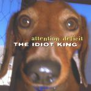

| Artist: | Attention Deficit |
| Title: | The Idiot King |
| Label: | Magna Carta MAX-9054-2 |
| Length(s): | 53 minutes |
| Year(s) of release: | 2001 |
| Month of review: | [07/2001] |
| 1) | American Jingo | 4.04 |
| 2) | Any Unforseen Event | 3.10 |
| 3) | The Risk Of Failure | 7.41 |
| 4) | Low Voter Turnout | 4.47 |
| 5) | Unclear, Inarticulate Things | 4.05 |
| 6) | RSVP | 7.53 |
| 7) | My Fellow Astronauts | 4.04 |
| 8) | Dubya | 7.12 |
| 9) | The Killers Are To Blame | 4.24 |
| 10) | Nightmare On 48th St. | 3.41 |
| 11) | Public Speaking Is Very Easy | 2.03 |
Any Unforseen Event has that somewhat wailing basssound I've also heard from Stuart Hamm. The track is still quite relaxed, but is now more in a jazzrock vein. Loose jazzrock.
The trio starts filling up the sound spectrum in the busy, driving The Risk Of Failure. Quite a bit of repetition in the riff department here, but the track comes out fresh and energetic. The second part of the track has plenty of discordant solo guitar with the bass grumbling throughout.
Low Voter Turnout then. The track opens with a low groove heavily focussed on the bass. In Unclear, Inarticulate Things, the guitar and drums are at high pace, but the bass continues to blindly hum its way through. Very active and energetic instrumental rock with of course LOTS of variation, but including a necessary groove and even some accessible melodies and waltzy parts.
The strong groove and tenseness on RSVP make it one of the highlights of the album. Alternating between moody and heavy fire, it is also a varied one. My Fellow Astronauts finds us back fiddling around with disjointed guitar shards and meandering bac kand forth, with of course a plainly audible bass and active drumming as support.
Dubya is again active jazzrock with the focus on the meandering guitar. Again the drummer is filling up all the holes the other musicians might have left. The Killers Are To Blame is a percussive piece mostly with an eerie undercurrent.
We rock away again on Nightmare On 48th Street. Plenty of energy, plenty of nightmare too. Very good, but will probably send most inhabitants of this planet up into the curtains. Final track is Public Speaking IS Very Easy, where I admnit I was hoping for a few nice citations from George W. Bush. What you do get is burping funk, something like Primus with disco and a weird Texan feel. Now where would that come from?